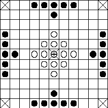

|
|
|
Two variant Tawlbyund openings (as described by Robert ap Ifan in a 1587 manuscript) |
|
Article by Sire Bohémond de Nicée
I can play at Tafl,
Nine skills I know,
Rarely forget I the runes,
I know of books and smithing,
I know how to slide on skis,
Shoot and row, well enough;
Each of two arts I know,
Harp-playing and speaking poetry.-Earl Rognvaldr Kali [1]
These were the accomplishments of the noble of Viking Age Scandinavia. Before the introduction of Chess (Old Norse Skak-Tafl) in the XIth and XIIth centuries, Scandinavians sharpened their wits by playing a game known as Tafl [2]. Tafl in Old Norse means "table" and by the end of the period referred to a variety of board games, such as Chess (Skak-Tafl or "check-table"), Tabula (the medieval ancestor of Backgammon, introduced from the French as Quatre and thus Kvatru-Tafl [3]), Fox and Geese (Ref-Skak, "fox chess", Hala-Tafl or Freys-Tafl), Three Men's Morris (Hræ_-Tafl "Quick-Tafl" [4]) and Nine Men's Morris [5]. However, the term Tafl was most commonly used to refer to a game known as Hnefa-Tafl or "King's Table" [6]. Hnefatafl was known in Scandinavia before 400 A. D. and was carried by the Vikings to Greenland, Iceland, Ireland, Britain, Wales and as far east as the Ukraine. The Saxons had their own variant, derived from a common Germanic Tafl game, which was apparently the only board game known to them prior to the introduction of Chess [7].
Hnefatafl and its numerous variants were played on odd-sized boards as small as 7 x 7 and as large as 19 x 19. Usually wooden, they sometimes had holes drilled in the center of each playing square, the pieces being pegged -this made for easy storage or even for traveling boards. Most boards had the starting positions of the pieces marked in two distinct patterns to facilitate setting up. In some cases, the board is drawn Go-style, the pieces standing at the intersections of the lines rather than at the centers of the squares. The board itself is sometimes mentioned as Tafl or Tann-Tafl [8] ("tooth-table," a Tafl-board inlaid with walrus ivory).
A beautiful carved board with 13x13 squares was found at Gokstad in Norway. This is a double sided board with a Nine Men's Morris layout carved on the reverse side as with other less impressive examples. Many other wooden Tafl boards have also been found throughout the Viking and Anglo-Saxon world, but some of the boards were much simpler affairs being only marked out with charcoal or scratched onto the surface of slices of rock.
The Scottish (Ard-Ri, "High King") and Irish (Fidchell, Fitchneal or Fithcheall) variants were both played on a seven by seven board, with slightly different starting layouts. Fitchneal is mentioned in the Mabinogion and in Cormac's Glossary (IXth century); the descriptions are scanty, so there is an element of speculation in assigning these games to the Hnefatafl family. Tablut, the Finnish variant, was played on a nine by nine board.
| Ard-Ri | Fitchneal Tablut |
The King is the crossed piece ();
the central and corner squares are marked by an X
Hnefatafl, the Norse variant, was played either on an eleven by eleven board or a thirteen by thirteen board.
|  | |
| Two variant Hnefatafl boards | |
Tawlbyund (or Tawl Bwrdd, "Throw Board"), the Welsh variant, was played on an eleven by eleven board. It dates back at least to the Xth century. The Welsh also played the seven by seven Irish game of Fitchneal, which they called Gwyddbwyll.
|
|
|
|
Two variant Tawlbyund openings (as described by Robert ap Ifan in a 1587 manuscript) |
|
|
Alea Evangelii; the gray pieces are the elite King's Guard (from C. C. C. Oxon. 122, a manuscript dating from the reign of King Æthelstan) |
Alea Evangelii, finally, was the Saxon variant and used a nineteen by nineteen board -it was apparently the only board game played by the Saxons. It takes its modern name from the opening line of the Xth century manuscript it is documented by: "Incipit alea evangelii quam Dubinsi…".
Some commentators suggest that this arrangement represents a sea-battle, with a King's ship defended by twenty-four white ships and a fleet of forty-eight dark attackers.
The game was sometimes played with dice (Tawlbyund, for example), which would either indicate the maximum distance a piece could move or whether the player could move at all or not (move on an odd roll, miss a turn on an even roll). The Irish called the dice variant Brandubh. As a true game of skill, Hnefatafl is best played without dice [9].
The King piece was called Hnefi ("King", Old English has Cyningstan "King-Stone"); the pieces Hunns ("knobs"), Tæflor ("table-men") or Tæfelstanas (Old English "table-men").
The Lapps call their Tablut pieces "Swedes" and "Muscovites" (they were very similar to modern stylized chessmen, the Swedish King resembling a King, the Swedish Hunns pawns and the Muscovites bent rooks). They sometimes had pegged bottoms that fit in holes drilled in the board. The King was bigger and more ornate.
With the larger boards (e.g. Alea Evangelii), the King's pieces were sometimes differentiated, with a small, elite "King's Guard" of uncapturable pieces.
There are many finds of board games and gaming pieces from Scandinavia and from the British Isles. Gaming pieces were often hemispherical and made of antler, amber, bone, clay, glass, horn, stone, jet, wood or even horses' teeth [10]. Finds of several light and several dark pieces together have been made sometimes with a single piece being a different shape, like a sea urchin, in the same area.
For 9x9 boards, sixteen dark pieces surrounded eight light pieces with an additional King. Boards with more squares typically had twelve light pieces and a King facing twenty-four dark pieces. The colors were often switched.
The King (large white piece) goes on the central square (Throne -Konakis in Finnish), surrounded by his men (other white pieces). The enemy (black) pieces are set up around the edges of the board. Black moves first -except in the case of Alea Evangelii, where White moves first.
Turns alternate between the players.
All pieces move in the same way, like modern rooks at Chess. That is, on his turn, a player may slide a single piece of his color any number of squares in either orthogonal direction (up-down or left-right, no diagonal moves) as long as it doesn't jump over another piece of either color. The Throne and the four corner squares are off-limits to all pieces except the King. With the smaller board variants, pieces of either color may pass over the Throne; with the larger board variants, only the King may do so.
The White player is trying to have his King escape his assailants by reaching a corner square. If the White player moves so that his King ends up with a clear path to any of the four corner squares, he must announce that he has an escape route open. The Lapps use the word Raichi ("Check") to announce a single route and Tuichi ("Checkmate") to announce a double route. On his next turn, if he can still do so, the King may be moved to a corner square and escape. White then wins.
If the Black player inadvertently opens an escape route for the King, the White player may take advantage of it immediately!
If the moved piece ends up sandwiching an opposing piece between itself and another piece of the moving color or a corner square, the sandwiched piece is removed from the board. This is called custodial capture. It is possible to capture several pieces in a single move.
| White captures both black pieces |
The King must be sandwiched along both axes to be captured. The Throne, corners and edges count as Black pieces for purposes of sandwiching the King, so Black needs only three pieces to capture the King on the edge of the board or if he is right beside his Throne, two if the King is right beside a corner square. When the King is in danger of being captured on Black's next move, he must announce "Watch your King" to the White player (this is reminiscent of Chess' prohibition against moving one's King into check). Black wins by capturing the King. The King can also be captured if he and no more than one defender are surrounded on all sides and incapable of moving.
| In all cases Black captures the King and wins | |||
A piece may safely move to place itself in sandwich between two opposing pieces (or a corner square).
| White can safely move in between the black pieces |
The winner is the White player if he manages to reach a corner square with his King, the Black player if he manages to capture the King. Because the game is uneven, it is good etiquette to play two games, switching sides. Each player keeps track of how many pieces he lost or took from his opponent and this score is used to determine the ultimate winner.
The King's forces usually possess a slight advantage, despite being outnumbered. Tactically, the defender (King's men) must arrange for the King to escape the board. Therefore, the defender should try to capture as many attackers as possible to clear an escape route, while not trying too hard to protect his own men since they, too, can block the King's escape. The attacker's object is not only to prevent the King's escape, but also to capture him. The best way to do this is to avoid making captures early in the game, instead scattering the attackers to block possible escape routes.[11]
Hnefatafl started to decline in the XIth century with the rise of Chess. It disappeared from Wales in the late XVIth century and from Lappland in the early XVIIIth.
Although the recorded rules are all post-period, there are no significant differences between variants of widely separate geographic location. We owe the record of Tablut to the diary of the young Linnaeus, the Swedish botanist, who visited Lappland in 1732.
Writings of the times mention various board games but it can be quite difficult to work out exactly how the game was played. Among the many names for games known from literature we have Brannan-Tafl, Hala-Tafl, Hnefa-Tafl, Hnot-Tafl, Hræ_-Tafl, Kvatru-Tafl and Skak-Tafl, although the rules for many of these remain unclear.
In any case the rules may have differed from place to place.
There are many references to Hnefatafl in Old Norse literature, from sources ranging from the poems of the Poetic Edda to saga references such as Orkneyinga Saga, the Greenland Lay of Atli, Hervarar Saga, Fridthjof's Saga and more.
Most frequently these references are to the game pieces.
The earliest mention of the game appears in Voluspa 60 [12]:
Then in the grass the golden tæflor, the far-famed ones, will be found again, which they had owned in older days.
Rigsthula speaks of the noble child Earl learning to swim and play Tafl [13]. From Hervarar Saga [14] come two riddles in the riddle-game between Odinn and King Heidrek:
Who are the maids that fight weaponless around their lord, the brown ever sheltering and the fair ever attacking him?
Answer: the pieces in Hnefatafl (in this case the brown pieces occupy the center, attacked by the white pieces). And:
What is that beast all girdled with iron which kills the flocks?
It has eight horns but no head?
Answer: the Hnefi or King. We know that women also played Hnefatafl from the reference in Gunnlaug's Saga Ormstunga in which Gunnlaug plays Tafl with Helga Thorsteinsdatter, the granddaughter of Egil Skallagrimsson [15]. Fridthjof's Saga Ins Fraeki [16] has a game between Fridthjof and Bjorn, where comments ostensibly made about the game are actually answers to King Helgi's man Hilding:
But as their troops seemed but few to them, they sent Hilding, their foster-father, to Fridthjof, and asked him to join the troops of the kings. Fridthjof was sitting at Tafl when Hilding came.
He said: "Our kings send word to thee, and they would have thy fighting men for the war against King Hring, who wishes to fall upon their kingdom wrongfully and tyrannously". Fridthjof made no answer, but said to Bjorn, with whom he was playing, "That is a weak point, brother: But thou needest not change it. Rather will I move against the red piece to know if it is protected".
Hilding spoke again: "King Helgi bade me tell thee, Fridthjof, that thou shouldst go on this raid, else thou wilt suffer hardship when they come back". Bjorn said, "Thou hast a choice of two moves, brother: two ways of saving it". Fridthjof said, "First it would be wise to move against this Hnefi and that will be an easy choice". Hilding received no other answer to his errand. He went back quickly to the kings and told them of Fridthjof. They asked Hilding what sense he made of these words. Hilding said: "When he spoke of the weak point, he meant this raid of your; and when he said he would move with the fair piece, that must refer to your sister Ingebjorg. Therefore look to her well. And when I promised him hardship from you, Bjorn called that a choice, but Fridthjof said that the Hnefi had first to be attacked, and by that he meant King Hring".
Several things are lacking in these brief references: the arrangement of the board, initial placement of the playing pieces, and the rules of the game. Archaeology provides some additional clues.
There have been numerous grave finds of game pieces. One runestone from Ockelbo, Sweden, shows two men balancing a boardgame on their knees, which reflects the saga references where arguments over the game frequently cause one or both players to leap to their feet, upsetting the Tafl-board and scattering the pieces [17, 18]. Fragments of actual game boards have been excavated as well.
One board from the Gokstad ship has a 15 x 15 ruled board on one side for Tafl, and what appears to be a Nine Men's Morris board on the reverse side [19]. A magnificent Tafl board thought to have been manufactured on the Isle of Man was found in a crannog excavation in Ballinderry, West Meath, Ireland [20].
Archaeologists had long recognized the similarities of these boards to those used for Fox and Geese, but this was not enough to reconstruct the Viking Age game. Further clues were provided by an English manuscript from King Æthelstan's court (c. 925-940 A. D.) which describes a game known as Alea Evangelii, which attempts to give the board and the arrangement of the pieces upon it scriptural significance as a harmony of the gospels [21]. Again, no rules for movement of the men are given, but the manuscript provides a diagram showing the initial arrangement of the game pieces.
Robert ap Ifan in 1587 described [22] Tawl-bwrdd as follows:
The above board must be played with a King in the center and twelve men in the places next to him; and twenty-four lie in wait to capture him. These are placed, six in the center of every end of the board and in the six central places. Two players move the pieces, and if one belonging to the King comes between the attackers, he is dead and is thrown out of the play; and if one of the attackers comes between two of the King's men, the same.
The final clue to reconstructing the rules of Hnefatafl was provided in 1732 by Linnaeus, the Swedish botanist, in his diary of his travels among the Lapps (Lachesis Lapponica). In the entry for 20 July 1732, Linnaeus described [23] a game known among the Lapps as Tablut, which is a derivative of Hnefatafl:
The Tablut board is marked out with 9 x 9 squares, the central one being distinctive and known as Konakis or throne. Only the Swedish king can occupy this square. One player gas eight blonde Swedes and their monarch; the other has sixteen dark Muscovites.
The king is larger than the other pieces. The Muscovites are placed on the embroidered squares. (The board was made of reindeer skin ornamented with needlework as the Lapps had no cloth). Rules:
1. All the pieces move orthogonally any number of vacant squares (the move of the rook in Chess).
2. A piece is captured and removed from the board when the opponent occupies both adjacent squares in a row or column. This is the custodian method of capture. A piece may move safely onto an empty square between two enemy pieces.
3. The king is captured if all four squares around him are occupied by enemy pieces; or if he is surrounded on three sides by enemy pieces and on the fourth by the Konakis. When the king is captured, the game is over and the Muscovites are victorious.
4. The Swedes win if the king reaches any square on the periphery of the board. When there is a clear route for the king to a perimeter square the player must warn his opponent by saying "Raichi!" When there are two clear routes he must say "Tuichi!" This is the equivalent of "checkmate" since it is impossible to block two directions in the same move.
Hnefatafl may be related to the Roman game of Ludus Latrunculorum ("The Game of Soldiers", Latrunculi for short).
During the Roman era, the Persians played a game known as Nard which may have been identical to Latrunculi. It should not be confused with the unrelated medieval Nard, which is a member of the Backgammon family.
Many Latrunculi boards were found in Roman Britain, including some near Hadrian's Wall, dating back to between the IInd and IVth centuries. The theory is that the Celts picked it up from the Romans and modified it. Their key innovation was to make the game uneven, with one side trying to escape the other.
The Latrunculi boards found vary somewhat in size: 7x8, 8x8 and 9x10. The number of playing pieces found with them also varies; there seems to have been simply a lot of them -Juvenal uses the word "mandra", which simply means "cattle herd".
Ludus Latrunculorum is first mentioned by Varro (116-27 B.C.) but is probably much older. It may in fact be in turn a descendant of the Ancient Greek games of Penta Grammai and Petteia.
Latrunculi are last mentioned by Macrobius around 400 A. D., when he rebukes those that "played at Tabula and Latrunculi".
Oddly, Latrunculi does not seem to have been played by the Byzantines.
Ovid tells us that the pieces were of different colored glass, sometimes precious stones. He also states that a piece is taken by custodial capture and that "backward moves" were allowed. Our chief source, however, is an obscure account in a poem known as Laus Pisonis which was written by Saleius Bassus during the middle of the Ist century A. D.:
Cunningly the pieces are disposed on the open board and battles are fought with soldiery of glass, so that now White blocks Black, now Black blocks White. But every foe yields to thee, Piso; marshaled by thee, what piece ever gave way? What piece on the brink of death dealt not death to his enemy? Thousand-fold are thy battle tactics: one man in fleeing from an attack himself overpowers him, another, who has been standing on the look-out, comes up from a distant corner; another stoutly rushes into the mêlée and cheats his foe now creeping on his prey; another courts blockade on either flank and under feint of being blocked, himself blocks two men; another's objective is more ambitious, that he may quickly break through the massed phalanx, swoop into the lines and, razing the enemy's rampart, do havoc in the walled stronghold. Meantime, although the fight rages fiercely, the hostile ranks are split, yet thou thyself are victorious with serried lines unbroken or despoiled maybe of one or two men and both thy hands rattle with the prisoned throng.
It is just possible some of the pieces may have been differentiated with increased power - some archaeological finds imply pieces in at least three colors. These "super-pieces" would have been the inspiration for the Tafl King. Dice may have been involved too - the Romans were avid gamblers.
Another clue to how Latrunculi were played is to be found in Egypt and Somalia, where Seega is still played today. Remember that Egypt was within the borders of the Roman Empire and Somalia just outside. Seega is played thus:
Each player has 12 pieces. A 5x5 board is used. The game starts with each player alternating placing two pieces anywhere on the board except on the central square. Each square may be occupied by no more than one piece. No captures may be made during that phase.
| A Seega board after all of the players' pieces have been placed |
Once all 24 pieces are on the board, all pieces move one space orthogonally in any direction, as long as the destination square is empty. The player who placed the last two stones goes first.
Enemy pieces are taken by custodial capture -by being sandwiched between two of one's own pieces along one axis. Multiple captures may result from a single move. A piece may sandwich itself between enemy pieces without being taken. A piece on the central square is safe from capture. Whenever a player captures an enemy piece, he may move the capturing piece again if this leads to another capture.
If a player is without any possible moves, his opponent must move again and make an opening for him. The winner is the player with the most pieces left on the board once each player has built an impregnable barrier or a player is wiped out. Draws are frequent.
Variants are played on 7x7 or 9x9 boards, with each player having then 24 or 40 pieces. High Jump is a variant of Seega where the capture is by jump, just like in Checkers.
Each player has 16 pieces (black and white). An 8x7 board is used, the players sitting with the short distance between them.
Option: Use an 8x8 board.
The game starts with each player alternating placing a piece anywhere on the board. Each square may be occupied by no more than one piece. No captures may be made during that phase.
Option: Each player starts with his pieces in the two rows of his end of the board.
| A Latrunculi board using the fixed set-up (without Ducis) |
All pieces move one space orthogonally in any direction, as long as the destination square is empty.
Option: All pieces move as chess rooks, sliding any number of spaces orthogonally as long as it doesn't jump over another piece.
Further Option: Dice are used to indicate how far the piece may move.
Enemy pieces are taken by custodial capture -by being sandwiched between two of one's own pieces along one axis or by being sandwiched in a corner of the board between two of one's own pieces. Multiple captures may result from a single move. A piece may sandwich itself between enemy pieces without being taken. Whenever a player captures an enemy piece, he moves again.
The game ends when a player loses all of his pieces or when a situation develops where neither player can capture any opposing piece (within 30 moves). The winner is then the player with the most pieces left on the board.
Each player exchanges two normal pieces for a special piece, a Dux (blue and yellow, respectively; plural Ducis).
The board is now oriented so that the long distance lies between the players. The Ducis are placed last. When using the fixed set-up, each player's Dux goes in the middle square of the third row, whilst the second row's extremities are left vacant.
| A Latrunculi board using the fixed set-up (with Ducis) |
A Dux may jump over a single enemy piece, landing on an empty square beyond. This does not constitute a capture unless the Dux sandwiches an enemy piece between its landing square and one of its own men. The Ducis' jumping power allow them to penetrate a defensive position and possibly start a series of captures from within a walled stronghold. Ducis can be captured normally.
The board I made was designed as a small, portable version. Wooden components were obtained from a hobby supply store. The pegged pieces of the dark player were stained. The board had holes drilled into it, then a grid was outlined in pencil , along with decorations, before being graven by my Lady. The engraved lines were then painted. A coat of varnish was applied to board and pieces.
A minimal set of rules was glued to the back of the board and felt pads applied. Finally, a bag was prepared by my Lady to contain the game board and pieces.
The decorative pattern of fighting dogs was inspired by Celtic animal knotwork.
Qeofilos and Eudoxia
Bell, R. C., Board and Table Games from Many Civilizations, Dover, New York (NY), 1979
Bell, R. C., Board and Table Games from Many Civilizations, Tome I, Oxford University Press, London, 1960
Bell, R. C., Board and Table Games from Many Civilizations, Tome II, Oxford University Press, London, 1969
Botermans, Jack, et al., Le monde des jeux, Société nouvelle des éditions du chêne, Amsterdam, 1987
Cleasby, Richard, and Vigfusson , Gudbrand, An Icelandic-English Dictionary, Clarendon. Oxford; 1957 (2nd edition)
Eales, Richard, Chess: the History of a Game, Facts on File, New York (NY), 1985
Gerhard Kendal of Westmoreland, Alquerque and Tafl Games, in Indoor Games or How to While Away a Siege, The Compleat Anachronist No 4, 1983
Gordon, E. V., editor, An Introduction to Old Norse, Clarendon, Oxford; 1957 (2nd edition)
Graham-Campbell, James, et al., Cultural Atlas of the Viking World, Facts On File, New York (NY), 1994
Harrington, Anne, Hnefatafl: the Viking Game of Strategy, in Northways, Winter 1990
Hollander, Lee, translator, The Poetic Edda, University of Texas Press, Austin; 1962
Jones, Gwyn, translator, Gunnlaug's Saga Ormstunga, in Eirik the Red and Other Icelandic Sagas, Oxford University Press, New York (NY), 1961
Levick, Ben, and Beadle, Mark, Games of the Viking & Anglo-Saxon Age, Regia Anglorum Publications, 1996 (regia@hrofi.demon.co.uk)
Murray, H. .J. .R., A History of Boardgames Other than Chess, Hacker, New York (NY), 1978
Murray, H. J. R., A History of Chess, Clarendon, Oxford; 1913
Pendleson, K. R. G., The Vikings, Windward, New York (NY), 1980
Robinson, J. Armitage, The Times of St. Dunstan, Clarendon, Oxford, 1923
Salamallah the Corpulent, Medieval Games, Raymond's Quiet Press, 1982
Schlauch, Margaret, translator, The Saga of Fridthjof the Bold, in Medieval Narrative, Prentice-Hall, New York (NY), 1934
Simpson , Jacqueline, Everyday Life in the Viking Age, Dorset, New York (NY), 1967
Walton, Ken and Jo, GURPS Celtic Mythos, Steve Jackson Games, Austin (Tx), 1995
Ward, Christie (Lady Gunnora Hallakarva), King's Table: Game of the Noble Scandinavians, The Bear Necessities, Bjornsborg, Ansteorra, 1996 (?) (gunnora@ephsa.sat.tx.us)
Wilson, David M., The Vikings and Their Origins, A & W Visual Library, New York (NY), 1980
[1] Gordon, E. V., 1957, p. 155. All translations from the Old Norse are by Lady Gunnora Hallakarva.
[2] Eales, R., 1985, p. 50.
Contrary to what many books say, neither Chess nor Checkers (a. k. a. Draughts) were commonly played in the early medieval period. Chess did not become popular until brought back by Crusaders after the first Crusade (1096-99) and Checkers was not played until much later in the medieval period, following the wave of Arab expansion. The Lewis chessmen [2B], although Viking, date to the mid twelfth century. However, recent excavations at Dublin and York have revealed playing pieces shaped like Arabic Chess pieces, but with pre-Conquest style Scandinavian style decoration.
It would not be strange if the Vikings, thanks to their trading contacts with the Arab world (via the Russian route), learnt this game earlier than other Europeans, although this is just speculation.
Chess certainly did not become popular or widespread until the twelfth century.
[2B] Pendleson, K. R. G., 1980, p. 38. Other sources also have good illustrations of this set.
[3] Several wooden boards for Tabula are known from the Saxons' Germanic homeland, and metal fittings for boards of this type have been found from the Viking Age in Germany and Denmark. The only known surviving British example of a Tabula board was found in Gloucester; dating to the XIth century. The decorated bone plates that once covered the now rotted wooden board and the playing pieces, beautifully carved from bone and antler, can be seen in the Gloucester city museum. Playing pieces suitable for this game are a more common find.
[4] Three Men's Morris is a close relative of Tic-Tac-Toe (a. k. a. Noughts and Crosses). Once each of the players' three pieces have been placed, they move one square in any direction until someone wins by forming a mill (row, column or diagonal of three pieces). In a variant, pieces are allowed to jump over other pieces. The Romano-Byzantine game of Rota (Latin for "Wheel") is another close relative.
[5] From the earliest times (it was played in Ancient Egypt) Nine Men's Morris (and its close relatives, Six Men's Morris and Twelve Men's Morris) has been known as 'the game on the other side of the board'. Several boards found in both Viking and Anglo-Saxon contexts have had Hnefatafl on one side and Nine Men's Morris on the other. However the game has also been found in rather unexpected places -ship's timbers, loose boards, benches, lumps of rock and, later, even on church pews and tiles. We do not know which of the 'Tafl' names was used for this game (Brannan-Tafl or Hnot-Tafl?), but the word Merels or Merelles (from the low Latin Merrelus, 'a token, counter or coin') is often used for this game just after Anglo-Saxon times. The Old Norse is Mylta, "Mills".
[6] Cleasby, R., and Vigfusson , G., 1957. See definitions for each Old Norse term.
[7] Murray, H. .J. .R., 1978, p. 56
[8] Murray, H. J. R., 1913, p. 144
[9] Dice were made of antler for the most part, although examples of bone, walrus ivory and jet are also known. More perishable materials, such as wood and horn, were also likely to have been used. They were often parallelepipeds, with the 1 and 2 on either end and the 3, 4, 5 and 6 on the four long sides. These 'long dice' are usually found in sets of two or three; it has been suggested they were used for Tabula (Kvatru-Tafl).
Others types were also found including modern shaped and numbered examples. Although the numbers on opposite faces do not always add up to seven (as on a modern dice), this arrangement is the most common. One curious die found in Viking Dublin is a cubic die that has the number combination of 3, 4, 4, 5, 5, 6. Its use is unknown but it is reminiscent of 'averaging' dice used in some modern wargaming (where the numbers are 2, 3, 3, 4, 4, 5).
The nature of the games played with dice is unknown, but simple games such as 'who can get the highest number' were probably common (and are suggested by some of the sagas), as were games similar to Liar's Dice and Yahtzee.
[10] Wilson, D. M., 1980, p. 55. Lampworked glass playing pieces in blue and green glass including a detailed Hnefi made in two colors of glass from Birka, Sweden.
Murray, H. .J. .R., 1978, p. 60. Stylized bone and jet pieces from England.
Bell, R. C., 1960, p. 80
Another type of gaming piece was made from slices of hart's pedicle (which must have been taken from a fully grown male deer carcass since this would not have been available with fallen antler).
In some cases these have been beautifully carved and decorated and often have a hole in the centre where the porous heart of the pedicle has been removed.
[11] Harrington, A., 1990, pp. 29-30
[12] Hollander, L., 1962, p. 12
[13] Murray, H. .J. .R., 1978, p. 60
[14] Ibid., pp. 60-61
[15] Jones, G., 1961, pp. 171-217
[16] Schlauch, M., 1934, pp. 8-9
[17] Murray, H. J. R., 1913, p. 444
[18] Simpson , J., 1967, p. 169
[19] Murray, H. .J. .R., 1978, p. 58
[20] Ibid., p. 59
[21] Robinson, J. A., 1923, pp. 69-71, 171-181 and frontispiece
[22] Bell, R. C., 1969, p. 44
[23] Bell, R. C., pp. 77-78
The Game Cabinet - editor@gamecabinet.com - Sire Bohémond de Nicée